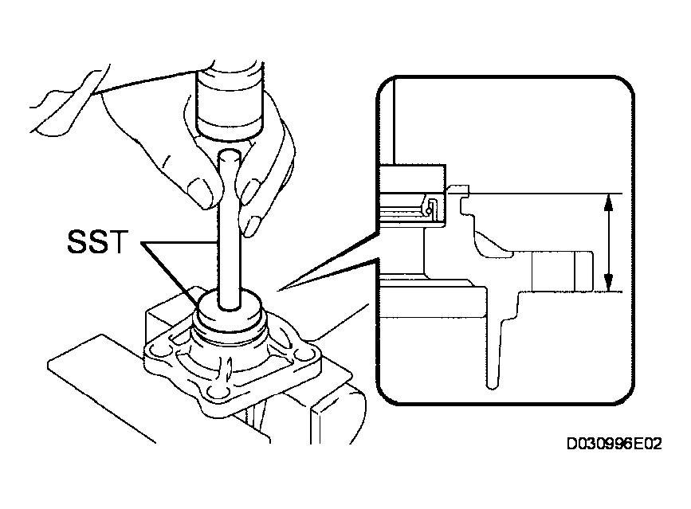
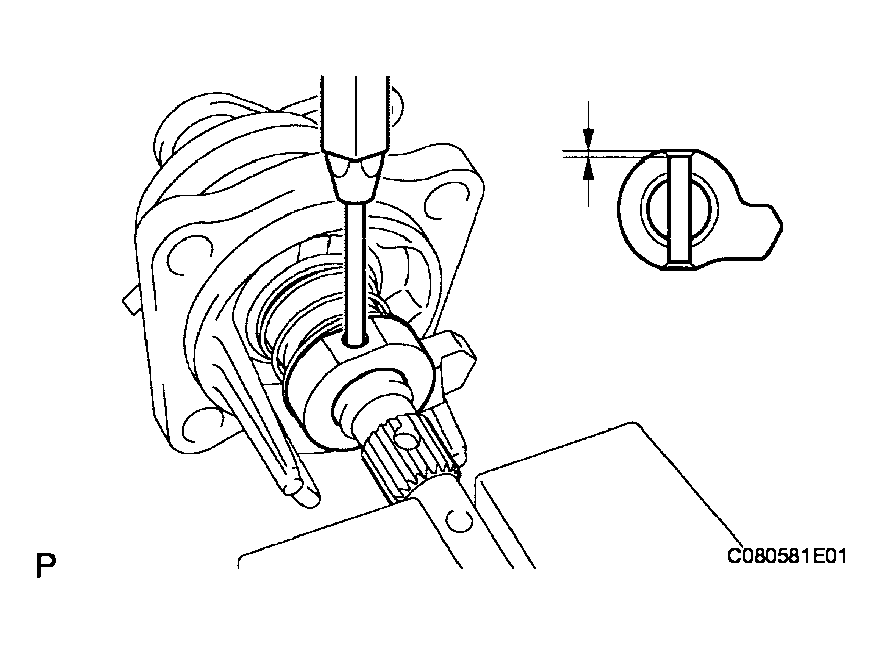
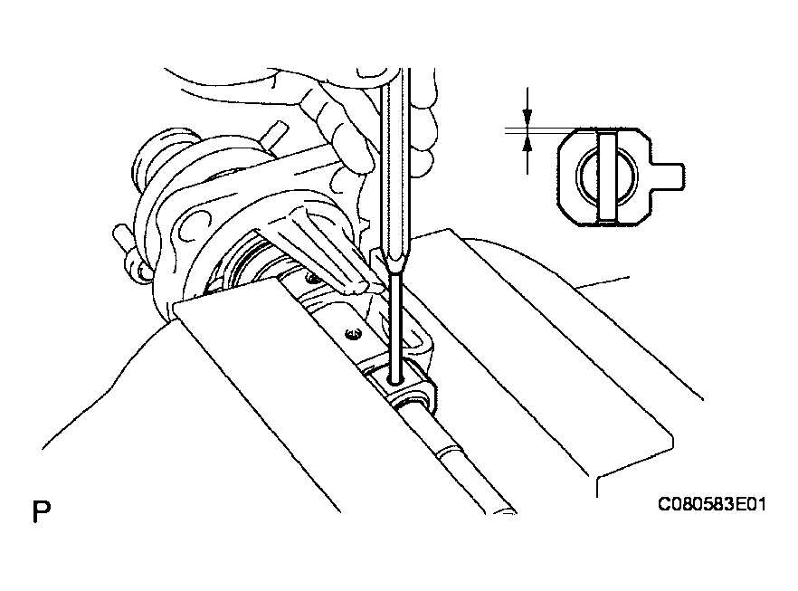
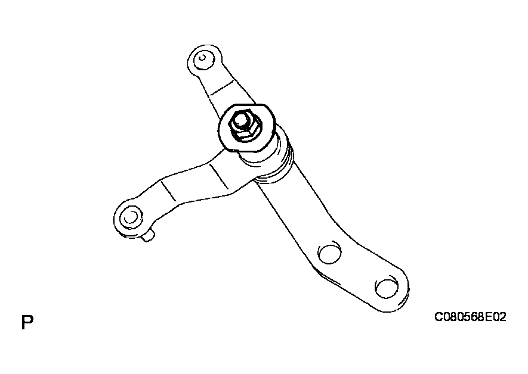

Shift And Select Lever Shaft: Reassembly
- INSTALL CONTROL SHAFT COVER OIL SEAL

Courtesy of © TOYOTA, LICENSE AGREEMENT TMS1002- Using SST and a hammer, tap in a new oil seal to the control shaft cover.
Standard depth: 25.0 to 26.0 mm (0.984 to 1.0236 in.)
- Coat the control shaft cover oil seal with MP grease.
- Using SST and a hammer, tap in a new oil seal to the control shaft cover.
- INSTALL CONTROL SHAFT COVER
- Coat the shift and select lever shaft dust boot with MP grease.
- Install the shift and select lever shaft dust boot to the control shaft cover.
HINT:
Install the boot with the projection facing upward and the hole side facing downward.
- Install the control shaft cover to the shift and select lever.
- Coat the shift and select lever shaft with MP grease. Using a brass bar and hammer, tap in the shift and select lever shaft and snap ring.
- INSTALL SELECT INNER LEVER
- Coat the No. 1 select spring seat with MP grease.
- Using a 5 mm pin punch and hammer, install the No. 1 select spring seat, No. 1 select return compression spring, select inner lever and select inner lever slotted spring pin to the shift and select lever shaft.

Courtesy of © TOYOTA, LICENSE AGREEMENT TMS1002Standard depth: 3.0 to 4.0 mm (0.118 to 0.157 in.)
- INSTALL NO. 1 SHIFT LEVER INNER
- Coat the shift interlock plate and No. 1 shift lever inner with MP grease.
- Using a 5mm pin punch and hammer, tap in the shift interlock plate, No. 1 shift lever inner and shift inner lever slotted spring pin to the shift and select lever shaft.
Standard depth: -0.5 to 0.5 mm (-0.020 to 0.020 in.)
- INSTALL NO. 2 SHIFT LEVER INNER
- Coat the No. 2 shift lever inner with MP grease.
- Using a 5 mm pin punch and hammer, install the No. 2 shift lever inner and shift inner lever slotted spring pin to the shift and select lever shaft.

Courtesy of © TOYOTA, LICENSE AGREEMENT TMS1002Standard depth: -0.5 to 0.5 mm (-0.020 to 0.020 in.)
- INSTALL NO. 2 SELECT SPRING SEAT
- Coat the No. 2 select spring seat with MP grease.
- Install the No. 2 select spring seat and No. 2 select return compression spring. Using pliers, install a new seat E-ring to the shift and select lever shaft.
- INSTALL NO. 2 SELECTING BELLCRANK BUSH
- Coat the 2 bushes with MP grease, and install them to the No. 2 selecting bellcrank.
- INSTALL NO. 2 SELECTING BELLCRANK DUST COVER
- Coat the dust cover with MP grease, and install it to the selecting bellcrank support.
- INSTALL NO. 2 SELECTING BELLCRANK
- Install the selecting bellcrank support, No. 2 selecting bellcrank plate washer, wave washer and nut.Fig 10: Installing Selecting Bellcrank Support, Selecting Bellcrank Plate Washer, Wave Washer And Nut

Courtesy of © TOYOTA, LICENSE AGREEMENT TMS1002Torque: 12 N*m (120 kgf*cm, 9 ft.*lbf)
- Install the selecting bellcrank support, No. 2 selecting bellcrank plate washer, wave washer and nut.
- INSTALL NO. 1 SELECTING BELLCRANK DUST COVER
- Install the dust cover to the selecting bellcrank.
- INSTALL SHIFT AND SELECT LEVER BUSH
- Install the bush to the selecting bellcrank.